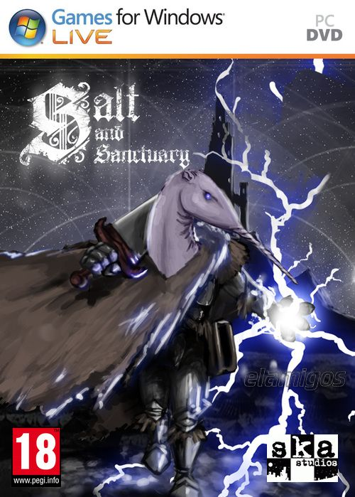

Salt and Sanctuary 475 MB
Género: Metroidvania, Souls
Explora una isla inquietante y devastadora en este estilizado RPG de acción
en 2D. Salt and Sanctuary combina un combate 2D rápido y brutal con una
mecánica de RPG sofisticada en un reino maldito de ciudades olvidadas,
mazmorras ensangrentadas y monumentos profanados.